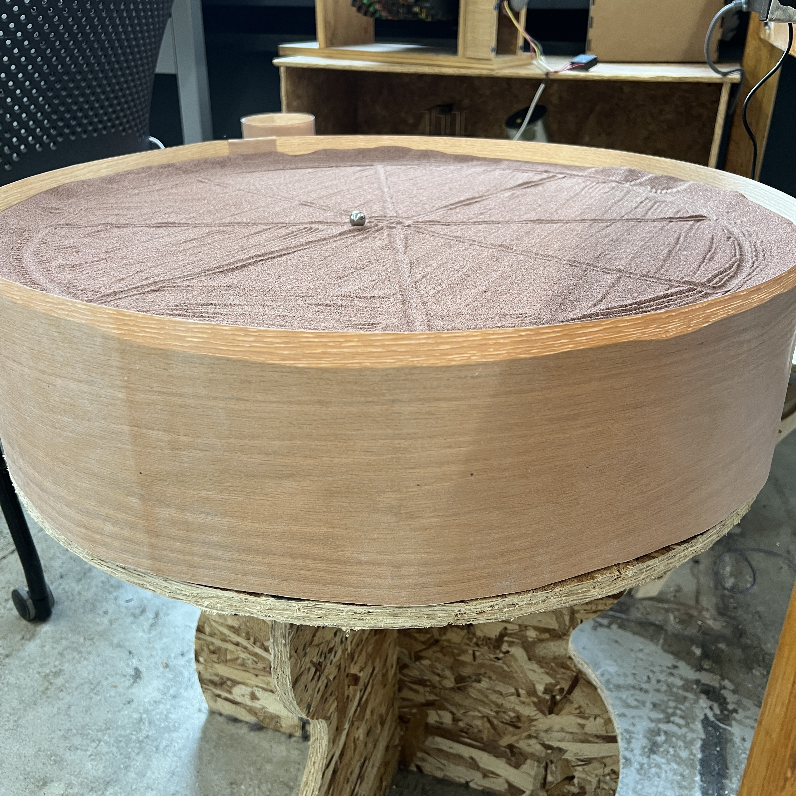
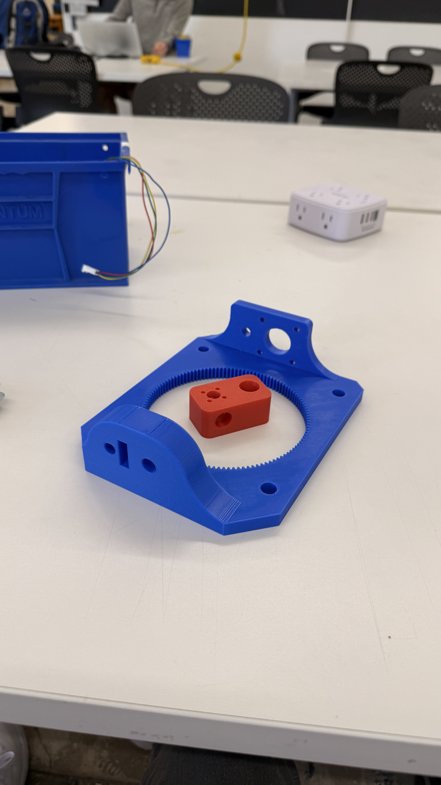
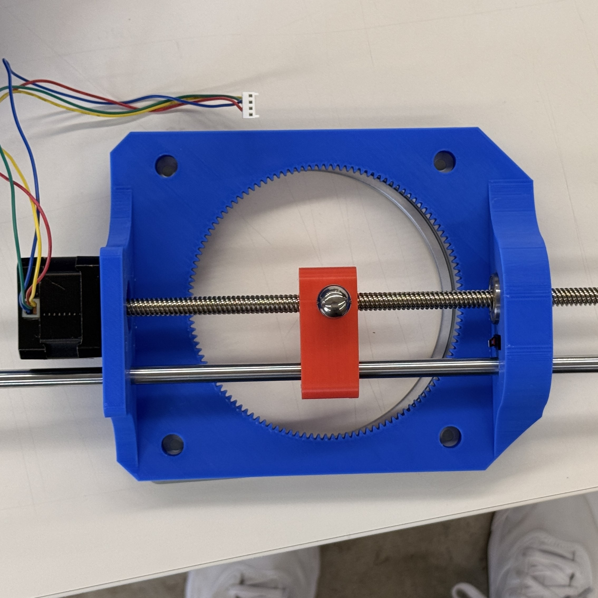
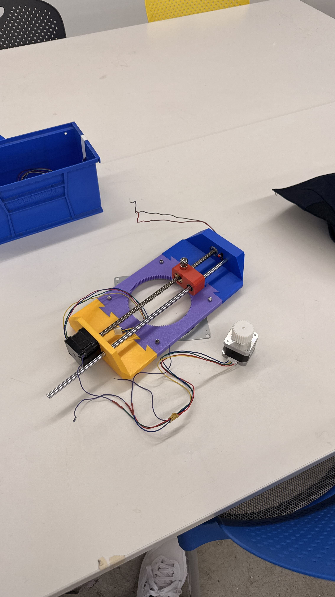
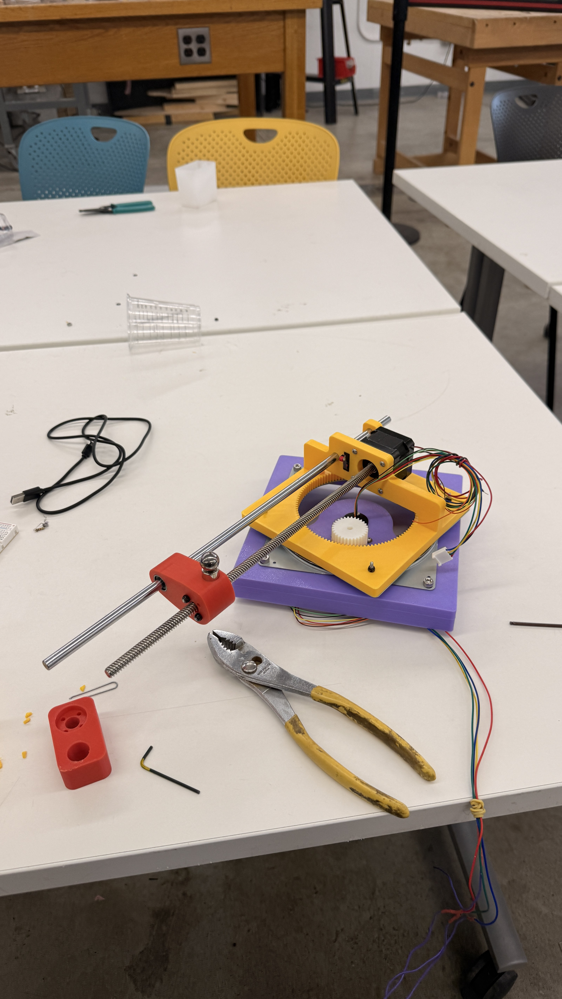
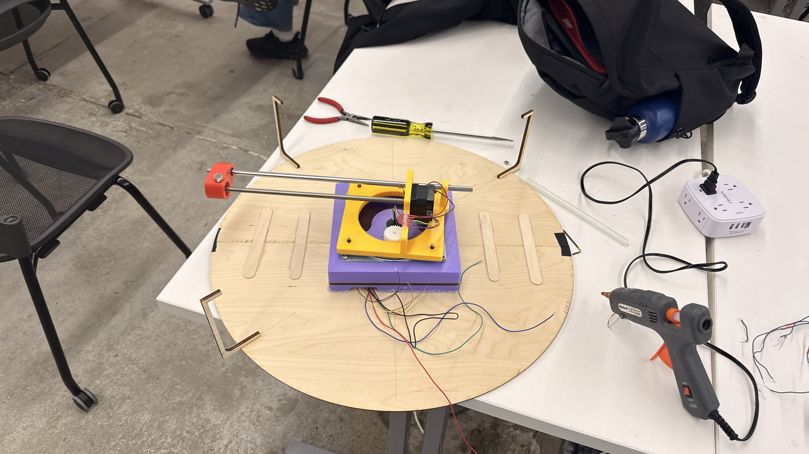

Awarded "Most Innovative End Effector" with a perfect grade of 100% - Harvard University PS70 Fall 2025
Final Design Highlights
Fully-integrated design with homing mechanism and multiple drawing patterns




Approach and Innovation
From the beginning, my partner Victor and I wanted this design to be sleek and challenging; it is from these goals that we decided to create a machine that can draw on all points of a circle by creating a polar plotting mechanism with a magnetic end effector. By building our base on the rotation and radius axes instead of x and y, we can more efficiently draw circles and create patterns. Hover over each picture to get a brief explanation of its role in our design process.







What worked
Design fundamentals and integration of the mechanism; we effectively developed a working polar plotting mechanism that can be programmed to draw a variety of patterns or custom curves.
What’s next
The stepper motors we used proved to be too weak for our application, often getting caught in areas with high sand. We tried adding smooth spacers between the traveler and the top, increasing voltage, and using a stronger motor. The results improved at the cost of frequent overheating even with the addition of a cooling fan.
Notable collaborators
Selected teammates and mentors.